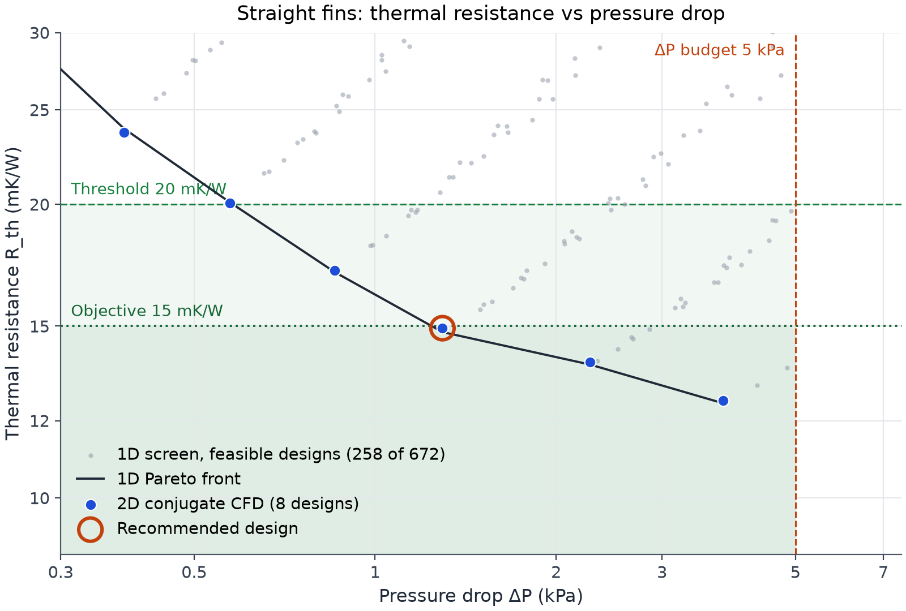
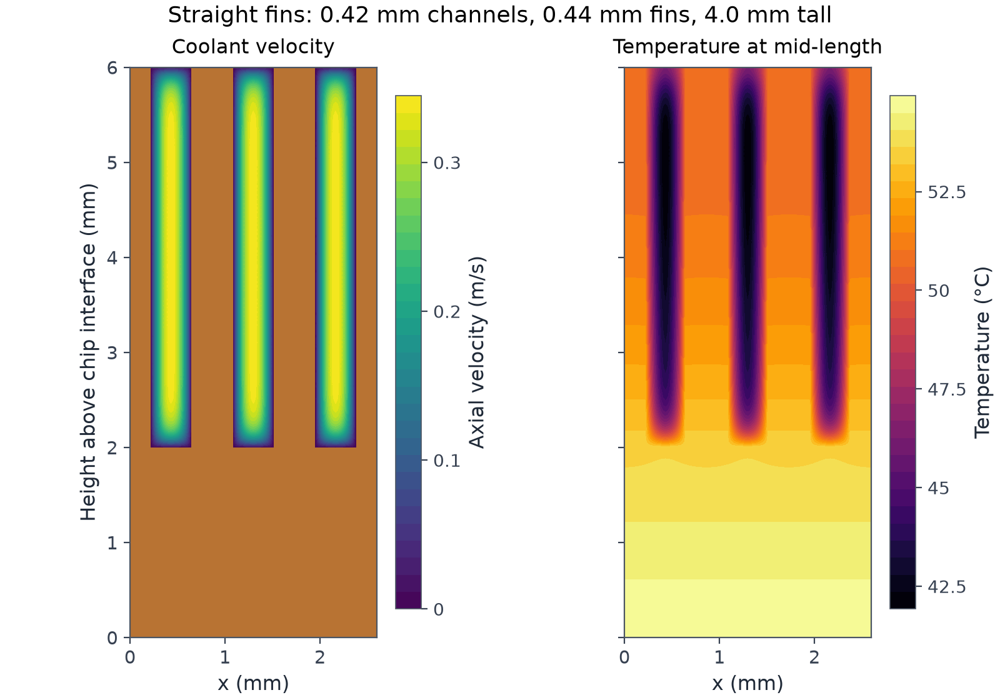
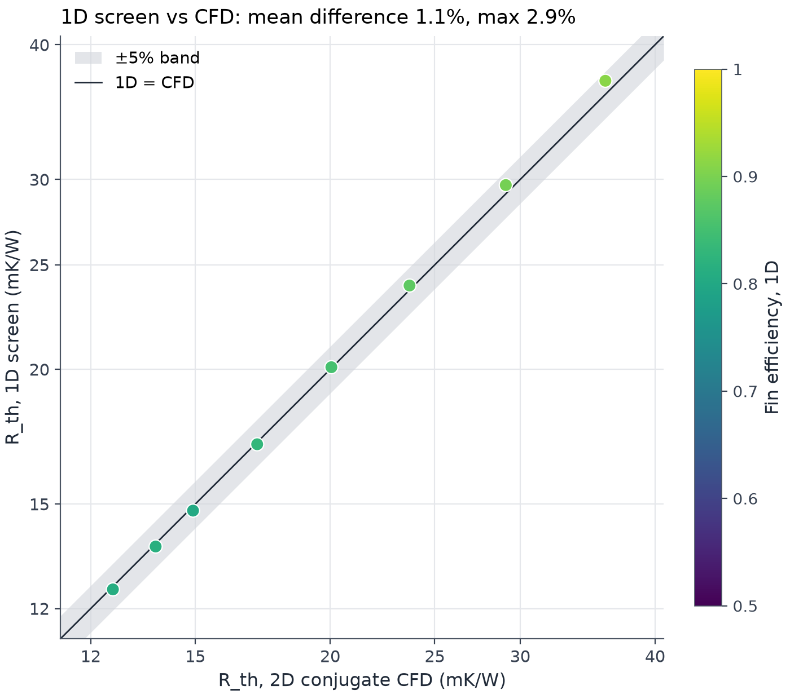
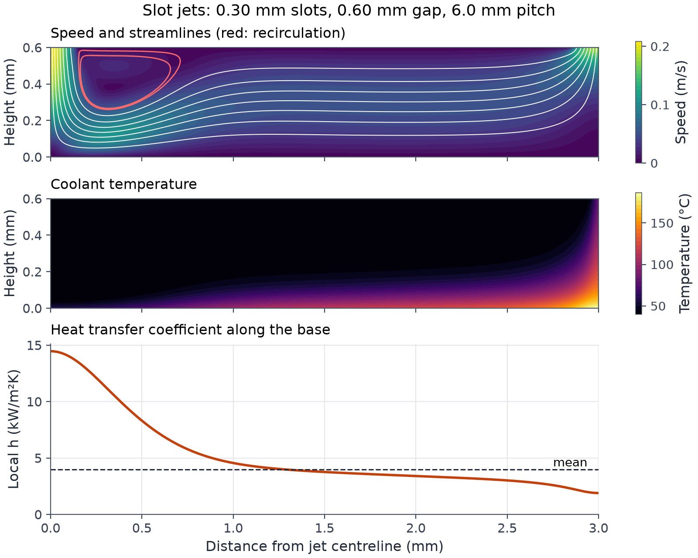
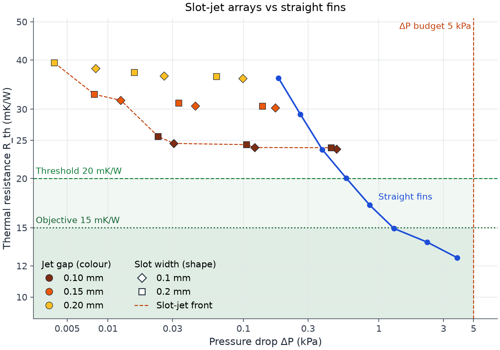
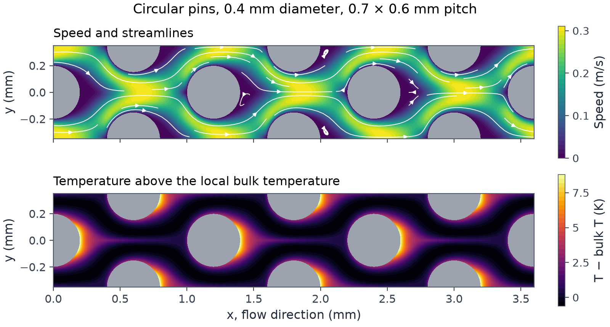
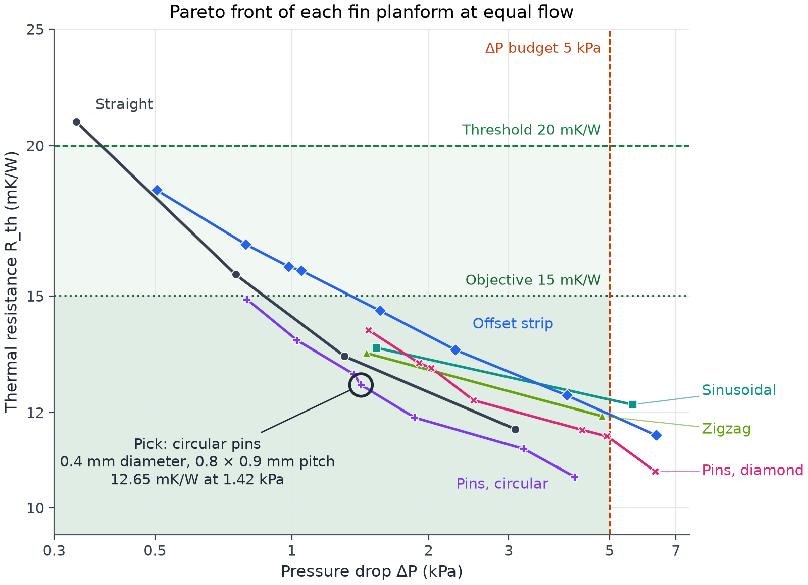
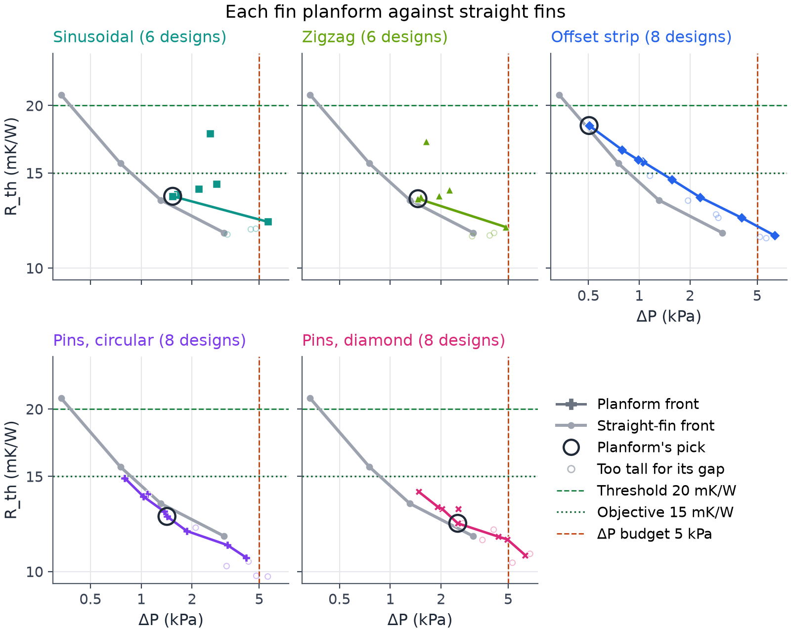

Choosing a cold plate for a 1 kW chip
I wanted to understand how much simulation it takes to choose a cold-plate geometry. I started with straight fins and a simple thermal-hydraulic model, then checked selected designs with conjugate CFD.
Under the same fully developed assumptions, the two models agreed closely. The harder question was whether that agreement was enough to trust the recommendation. Its margin to the preferred thermal target is small, and an apparent advantage for circular pins needs a more complete model before I would act on it.

The requirement
A 1 kW chip on a 60 × 60 mm copper cold plate, cooled by 25% propylene glycol at 40 °C. Thermal resistance is measured from the average plate base temperature to the coolant inlet. The interface material and the chip are outside it.
| Criterion | Value | Where it comes from |
|---|---|---|
| Flow | 1.5 LPM | Open Compute Project guidance of 1.5 LPM per kW for a 10 K coolant rise |
| Thermal resistance, must meet | ≤ 20 mK/W | OCP reports under 20 mK/W case to inlet, interface material included, for a 1 kW module. The plate alone has to beat that |
| Thermal resistance, objective | ≤ 15 mK/W | A measured skived plate reached 12 mK/W at 2.6 LPM. 15 leaves about 5 for the interface material |
| Pressure drop in the channels | ≤ 5 kPa | My allocation, a third of a 15 kPa whole-plate budget. I did not find a standard that sets a per-plate limit |
| Smallest feature | 0.15 mm | Inside the range a fabrication guide gives for skived copper fins |
The design I would pick
Straight copper fins with 0.42 mm channels, 0.44 mm fins, 4.0 mm tall. The CFD gives 14.9 mK/W at 1.29 kPa, which puts the plate base at 54.9 °C on average and 59.9 °C at the outlet end.
Of that 14.9 mK/W, about 8.4 is fins and convection, 5.0 is the coolant warming up as it crosses the plate, and 1.4 is conduction through the base. Finer fins only reduce the first part.
| Flow | Pressure drop | Resistance | Average base | Peak base |
|---|---|---|---|---|
| 1.0 LPM | 0.86 kPa | 17.4 mK/W | 57.4 °C | 64.9 °C |
| 1.5 LPM | 1.29 kPa | 14.9 mK/W | 54.9 °C | 59.9 °C |
| 2.0 LPM | 1.73 kPa | 13.7 mK/W | 53.7 °C | 57.4 °C |
This design meets the objective by 0.5%, and misses it at 1.0 LPM. That margin is smaller than the effects the model leaves out, so I treat the recommendation as provisional until the checks at the end are done.
How I chose it
Heat removed per unit of pressure drop is highest for the lowest-pressure design in the acceptable window, so that ratio could not separate the candidates. I walked along the front instead, and kept going only while each 1% of extra pressure drop bought at least 0.25% lower resistance. The 0.25 cut-off is a judgment call.
| Design | Resistance | Pressure drop | Return on the next step | |
|---|---|---|---|---|
| 0.50 mm channels | 17.1 mK/W | 0.86 kPa | 0.33 | Keep going |
| 0.42 mm channels | 14.9 mK/W | 1.29 kPa | 0.14 | Stop here |
How I got there
A 1D model to screen the design space
A resistance network evaluates every combination of channel width, fin thickness and fin height, using base conduction, fin efficiency, laminar duct correlations and coolant heating. It covers 672 designs in a few milliseconds, and 258 of them meet the pressure and manufacturing limits.
My earlier version of this model used circular-tube constants on rectangular channels and had no fin efficiency. Finding that was the first useful result.
Conjugate CFD on the shortlist

I solved the eight designs along the 1D front with a finite-element model of the channel cross-section. Flow in the channel and temperature in the fluid, fin and base are solved together.

For these straight-fin designs the two models agree on thermal resistance to 1.1% on average and 2.9% at worst. Both assume fully developed flow, so this tells me the 1D model handles fin and base conduction correctly. It does not tell me either model matches hardware.
Other geometries I checked
Straight fins look the same at every point along the flow. Jets and interrupted fins do not, so I added a steady laminar Navier-Stokes and energy solve in two dimensions.
Slot jets onto a flat base

Coolant enters through long slots in the cover, strikes the base and runs outward to return slots. With slots and gaps of 0.1 mm or more, the best of the 18 arrays I ran reached 23.8 mK/W, which misses the 20 mK/W requirement.
The fins in this study have six to eight times the wetted area of a flat base, so the liquid film over a flat base has to be much thinner to compete. In an earlier sweep, gaps of 0.05 mm came close to the fins. I have only seen features that small made at low volume.

Fin shapes in plan view

For tall, thin fins the flow over most of the fin height is close to two-dimensional when seen from above. I solved six fin shapes this way and fed the results into the same resistance network as before. This model ignores the channel floor and cover.

The table gives the design the rule selects for each shape. These are single points, so they are not at the same pressure drop.
| Fin shape | Selected design | Resistance | Pressure drop |
|---|---|---|---|
| Circular pins | 0.4 mm pins, 0.8 × 0.9 mm pitch | 12.7 mK/W | 1.42 kPa |
| Straight | 0.4 mm channels and fins | 13.4 mK/W | 1.31 kPa |
| Zigzag | 0.4 mm gap, 0.3 mm amplitude | 13.4 mK/W | 1.46 kPa |
| Sinusoidal | 0.4 mm gap, 0.3 mm amplitude | 13.6 mK/W | 1.54 kPa |
| Diamond pins | 0.4 mm side | 12.3 mK/W | 2.51 kPa |
| Offset strip | 2 mm strips | 18.4 mK/W | 0.50 kPa |
To compare shapes fairly I read each front against the straight-fin front at the same pressure drop, over the range where both exist:
- Circular pins: 2.6 to 5.8% lower resistance, between 0.8 and 1.9 kPa.
- Zigzag and sinusoidal: 2 to 4% higher.
- Diamond pins: 2 to 7% higher.
- Offset strips: 2 to 12% higher.

I do not read the pin result as a recommendation. On straight fins, this plan-view model gives resistance 5.7% lower than the cross-section CFD, because it has no floor or cover. A 3 to 6% lead for pins is the same size as that difference. The pin solutions are also steady, and I have not checked whether the wakes would shed. Skiving cuts continuous fins, and I did not find a documented volume process for copper pins at this size.
The sinusoidal and zigzag fins had higher pressure drop without lower resistance in this model, at Reynolds numbers of about 90 to 150. Published gains for wavy channels are reported at higher Reynolds numbers and attributed to three-dimensional vortices, which a plan-view model cannot represent.
What the checks cover
| Check | Quantity | Compared with | Result |
|---|---|---|---|
| Cross-section solver, rectangular ducts at four aspect ratios | Friction and Nusselt number | Shah and London reference values | within 0.007% |
| Cross-section mesh at twice the resolution | Thermal resistance of the recommended design | Itself | 0.001% change |
| Navier-Stokes solver, developing flow between plates | Local Nusselt number | An independent marching solution | within 0.64% |
| Plan-view solver, straight channel | Friction and Nusselt number | Analytical solution | within 0.004% |
| Plan view against cross-section, same straight design | Resistance and pressure drop | The cross-section CFD | 5.7% and 7.1% low |
| Energy balance, every Navier-Stokes run | Heat in against heat carried out | Conservation | within 0.75% |
These checks show the solvers reproduce known solutions and that the meshes are fine enough. None of them is a comparison with a measured cold plate.
What I'm checking next
- Entrance effects. Both models assume fully developed flow. I want to know how much developing flow and inlet losses move the recommended design, given its 0.5% margin.
- A measured plate. I need a published test with complete geometry to compare against. The closest one I found does not give its width or base thickness.
- Pins in 3D. A matched 3D comparison of straight fins and circular pins at equal pressure drop, to see whether the pin lead survives the floor and cover.
Requirement sources: OCP OAI System Liquid Cooling Guidelines (2023); Ortega et al., ASME InterPACK 2022; Boyd heat sink fabrication guide. The assumptions register in the repository lists every external number with its source.